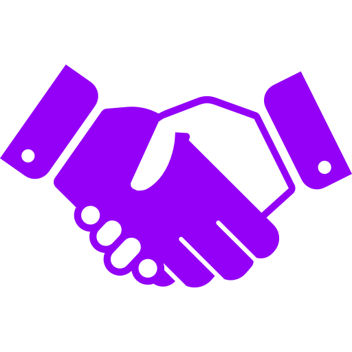

Quem Somos
Fomos fundados em 2022, com o intuito de ser o maior serviço de aluguel de jogos do Brasil. Nosso criador, Pedro Henrique Farias Boscachi, criou o nome BTGames no meio de sua incrível falta de criatividade. Com o passar do tempo, a empresa foi expandindo suas operações e agora temos cerca de 120 funcionários e 5 prédios comerciais.
Nossa missão
Nossa missão é levar a diversão por meio de jogos para todos aqueles que precisarem por um preço que caiba no bolso de todos.
Nossos valores
Qualidade: procuramos sempre atingir os níveis máximos de qualidade;
Ética: Todos nossos colaboradores agem com o máximo de respeito;
Ser humano em primeiro lugar: Antes de tudo, é preciso que lembrar que todos somos humanos, por isso, a BTGames foca no bem-estar e na saúde de todos seus clientes e colaboradores.
Desenvolvimento Sustentável: A boa gestão dos recursos humanos, financeiros e naturais, tem como base o desenvolvimento dos colaboradores, solidez financeira, práticas comerciais saudáveis e ações para a preservação do meio ambiente: pontos fundamentais para o equilíbrio de nossas operações.